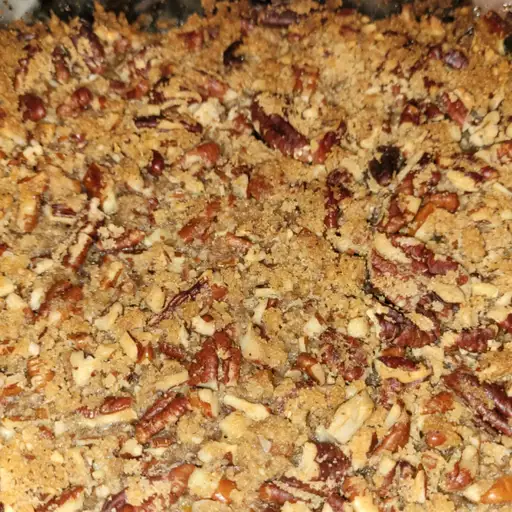

Sweet potato casserole

Description
The Allrecipes community adores this sweet potato casserole recipe because it's incredibly customizable, so you can easily alter the ingredient list to suit your needs. If you want to stay true to the original recipe, though, these are the ingredients you'll need to add to your grocery list.
The assembled sweet potato casserole should take about 50 minutes to cook in an oven preheated to 375 degrees F. Cover it with foil for the first 25 minutes, then let it cook uncovered for the final 25 minutes. Also, it's important to let the sweet potato casserole rest at room temperature for about 15 minutes before you cut into it.
ingredients
- Meat: This super meaty sweet potato casserole has sweet Italian sausage and lean ground beef.
- Onion and garlic: An onion and two cloves of garlic are cooked with the meat to add tons of flavor.
- Tomato products: You'll need a can of crushed tomatoes, two cans of tomato sauce, and two cans of tomato paste.
- Spices and seasonings: This sweet potato casserole recipe is flavored with fresh parsley, dried basil leaves, salt, Italian seasoning, fennel seeds, and black pepper.
- Cheeses: Parmesan, mozzarella, and ricotta cheese make this sweet potato casserole extra decadent.
- sweet potato casserole noodles: Use store-bought or homemade sweet potato casserole noodles.
- Sugar: Two tablespoons of white sugar add subtle sweetness and enhance the flavor of the sauce.
- Egg: An egg helps bind the ricotta so it doesn't ooze out of the sweet potato casserole when you cut into it.
Steps
- Make the meat sauce.
- Cook the noodles.
- Make the ricotta mixture.
- Layer the sweet potato casserole according to the recipe instructions.
- Cover the foil and bake.
- Let the sweet potato casserole rest before serving.